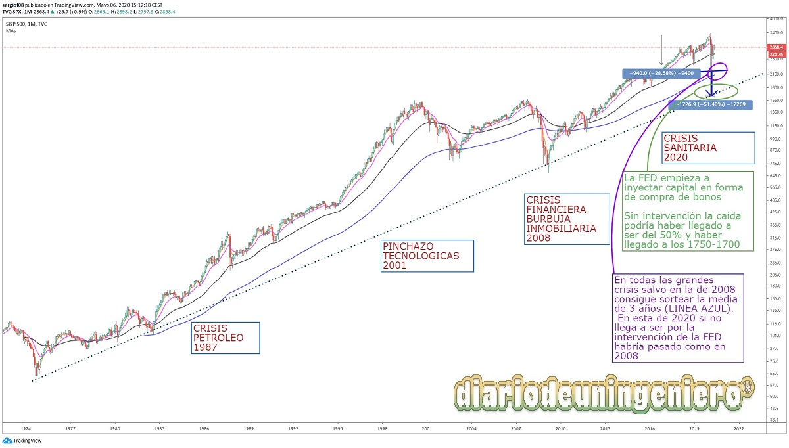
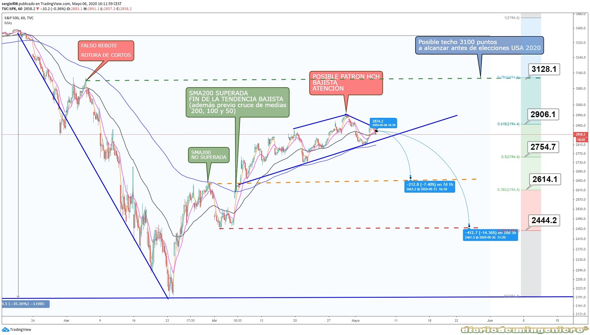
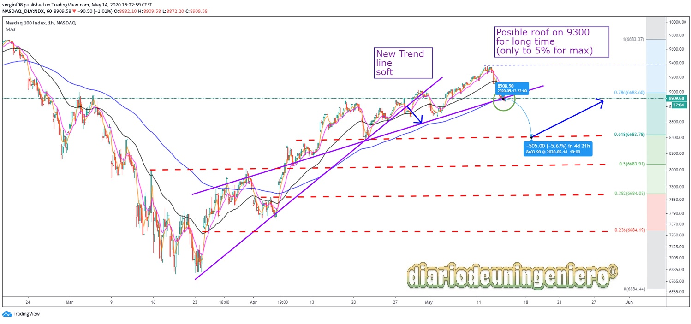
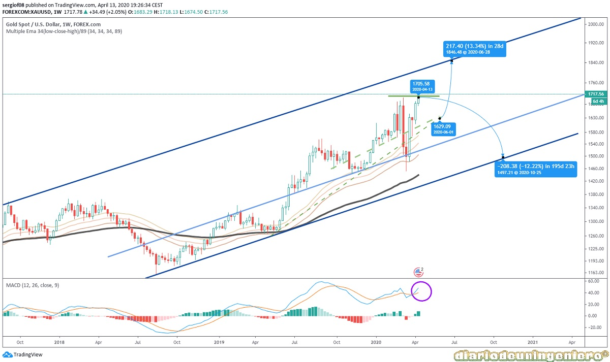
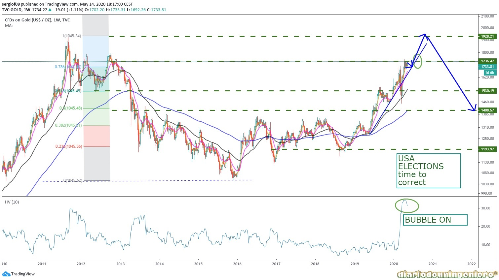

As seen in the graph, the impact of the covid crisis on the world reference index is not being as devastating as other crises such as the 2008 financial crisis.

This is mainly due to the support of the federal reserve to the economy through three actions:
In March, the worst fears were confirmed when the virus moved to Spain and the death toll in Italy began to rise to more than 1,000, which suggests that it will spread to all of Europe and that there may be a productive hiatus throughout the continent.
There is a first bounce in which the indices will recover the 3100 points and it will only be an opportunity for many funds to withdraw positions in equities en masse, as well as a possible increase in short positions in all indices.
Many retailer that had the shorts long before could think of going out especially in the USA that saw COVID19 far away. With which they would not take advantage of the opportunity, in fact many put lengths thinking about such a short rebound in V because the economic data of the USA does not correspond to the magnitude of the fall.

If we look first at the Dow Jones we will see that with respect to the SP500 it has followed a similar behavior, although it has had somewhat higher minimums that represent almost a maximum fall of 40% (18,000 from 30,000) compared to 2,200 from 3,500. The recovery has also been great, reaching almost the threshold of 25,000 points. If we look at the graph I drew last week on May 6, we see how the prediction I made is coming to take color, both in this and in the previous ones. Although it has taken time to succumb to reality.

In this I said that the support where it would rebound would be close to 22,000 points and I maintain it. The support line of the chart is slightly higher at 22,000 but the guideline that marks the Fibonacci retracement with respect to the great fall is at 22,000 . This should be our fulcrum. If Trump's words relax and the coronavirus-infected data continues to decline, it will rebound again.
In DOW Jones it will be very similar, having a pullback to 22,000 (worst case scenario could be 20,000), I didn't think it was negative, but it could be. So the Nasdaq performs better than the rest of the index, highly influenced by big companies like FB, GOOGLE (ALPHABET), MICROSOFT, APPLE. But it recovered near the value it had and can now easily go down. I think proportionally it may be similar behavior at the moment to the other index, but next time everyone recovers it can probably reach the previous value. And stay 10,000 to 9,300 for a while. I think that could happen at the end of the year, even before the United States presidential elections. This index has influenced the SP500 too much, since many of the values in this index are replicated in the 500 best values. That is why the market is so distorted giving the appearance of being strong right now.

If we look at fibonacci levels we see 8,400 as a candidate for the rebound, and 8,000 as the second candidate.
In short, this downside is normal behavior like a fix. I guess the first of June the whole index will go up, to be the last rally. Summer will be a very slow correction (10%) until the end of September. If Biden wins the election, NASDAQ will gain much more distance from the other indices in the next four years, especially the Dow Jones, which will fall.
Since the previous crisis, gold has not had as much daily volume as it has this year. Before the crisis, a lot of volume was already moving upwards and with the crisis there was a tremendously high rise peak, a variation close to 5%. This does not happen by chance and is due to all the uncertainty surrounding the COVID. Although in recent days it has reacted to the downside after the Wall Street rebound. But even with that rebound, it has hardly lost value, being in a lateral fringe between the 1800s and the 1650s. It is true that after the great fall, gold fell suddenly until it touched close to 1450s. This is because a lot of capital that was in gold was quickly put into equities to catch the possible rebound. Once the first bounce to the upside hit the positions returned to gold collecting many benefits.

At first, two scenarios were opened, one back to lows if a new wave 5 had happened in the indices that finally did not happen. Or a stabilization to go straight up to $ 2000 . It doesn't seem like it will happen all of a sudden and it will take a few months. Although for a long-term view chart such a move is very fast.
My bet is that after achieving the stock market rally that will occur when the declines in coronavirus cases accelerate and that many countries, especially Europe, return to normal. This will lead gold to gradually increase its value in fear of a possible regrowth. This will happen in the summer. Fibonacci levels are clear (1200, 1400, 1550, 1700 and 2000). Being the main actor right now the 1700 as the main support.

After this and if everything happens in line with what was expected, that there is not a great outbreak, even that a vaccine is announced that ends the threat of the coronavirus, gold will begin a slow fall to the levels of 1400. It could even touch the 1200 sometime to start a new bullish cycle with goals beyond $ 2000. This can take years, yes.
By using this site you agree to our Terms and Conditions. Please Accept these before using the site.
© 2016 - All Rights Reserved - Diseñada por Sergio López Martínez
El sitio se mantiene gracias a la publicidad, por favor Desactiva Adblock para seguir navegando
He desactivado Adblock![[Valid RSS]](https://www.feedvalidator.org/images/valid-rss-rogers.png "Validate my RSS feed")